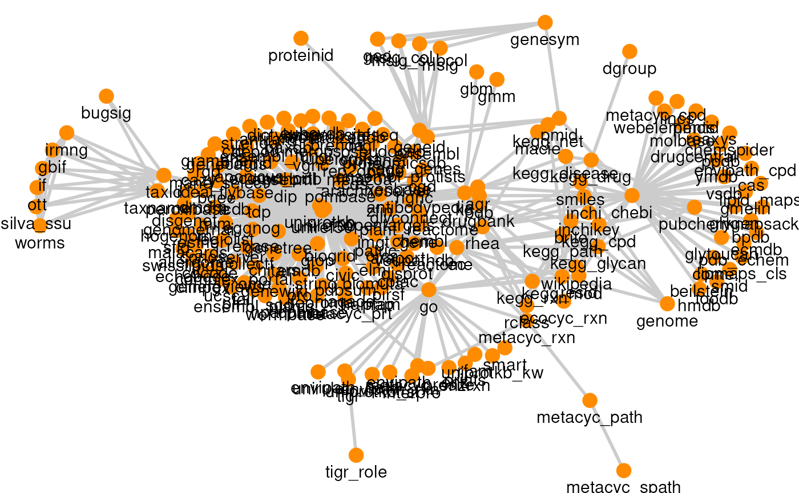
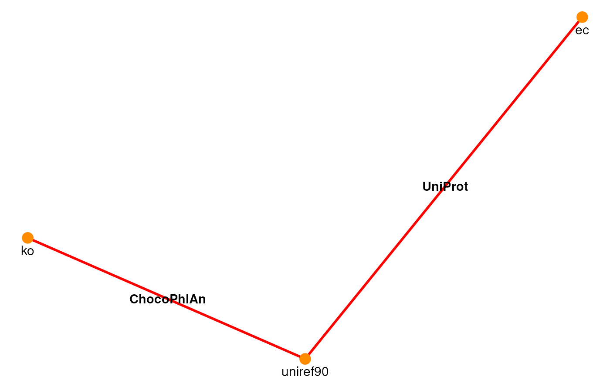

vignettes/ariadne.Rmd
ariadne.RmdAll domains of biology have to do with relational information. From genes to organisms, each and every biological entity has some link to other entities. For example, bugs are friends or foes with other bugs, have foods they like and foods they hate (sometimes to death). All these links we call relational information, which becomes knowledge once it is smartly combined with other pieces and kept safe and open in a wonderfully organised place, usually a database.
Building a database from scratch is no easy task. Fortunately, nowadays databases for all kinds of relational information are available: UniProt for proteins, Rhea for reactions, KEGG for pretty much anything, and many others, which keep growing together with the field they support. As a scientist, having access to such vast knowledge from past research can truly make us “stand on the shoulders of giants”.
In practice, though, it is not always easy (or even possible) to leverage such knowledge in routine bioinformatic analyses due to three main challenges. First, data is usually deposited somewhere online, so there must be a fast and reliable method to retrieve and import it in the local environment. Second, data size often exceeds the disk space of a typical laptop, which requires smart ways to efficiently subset and store data in a lightweight, accessible format. Third, unless you are lucky, data will need a tidy-up before it is compatible with your dataset and other resources, necessitating a systematic approach to integrate information from multiple resources.
Sometimes biology seems like a huge labyrinth with no simple paths between its building blocks (genes, proteins, organisms, etc.). Even when the path to take is clear, many obstacles may hide on the way: inaccessible resources, long query times, incompatible formats, just to name a few. Crossing the labyrinth without a strategy is a seriously boring and discouraging task.
Luckily, ariadne is here to help. By “Assembling Relational Information Across the Database Network”, ariadne provides a harmonised graph of interlinked resources and a rich toolkit to navigate its underexplored paths.
The harmonised graph of resources was built with a reproducible
pipeline hosted in the companion package ariadne.db, and it
is openly available on Zenodo, including its
previous versions.
Before describing how ariadne functions, let us explain some important jargon:
genes, (KEGG genes id), ko (KEGG
Orthologues), ec (Enzyme Commission number) or
uniref90 (90% similarity UniRef sequence clusters).x2y, where x and y are the names of the feature types in
the first and second columns, respectively. Sometimes, there is also a
third column with the names for the target feature type y. Examples:
tax2cpd (linkmap between taxon names and compounds).x ~ y, where x and y are the origin and target feature type
to be linked, respectively. Examples: ko ~ ec,
disease ~ drug, genes ~ metacyc.Looking inside ariadne:
igraph object,
where edges are resources and nodes feature types. This is a natural
choice for relational data and enables applying graph theory to select
the preferred path from one feature type to another. It can be also
easily expanded with user-defined resources.httr2 requests or using
pre-existing APIs. Whenever possible, even faster SPARQL queries are
used to fetch linkmaps.BiocFileCache
and efficiently stored and imported using the Apache parquet columnar
format from arrow.MultiFactor class, designed for optimised factor
operations, takes care of generating the desired linkmap by sequentially
weaving linkmaps along the path from the origin to the target feature
type.ariadne provides a graph-based approach to integrate relational knowledge in routine bioinformatic analyses. As such, it can be used to annotate any type of biological data when related databases are available. This opens up potential applications in various corners of bioinformatics, from knowledge-driven feature annotation and stratification to goal-oriented feature selection and prediction.
With microbes as features, ariadne allows to functionally annotate them using ChocoPhlAn or WoL and to stratify them by Bug Signatures or Gut Modules. (ideas for examples with metabolites, proteins, genes etc?)
ariadne is interoperable with the Bioconductor ecosystem. In particular, the SummarizedExperiment (SE) data container and its derived classes can be directly annotated or stratified by relational information with ariadne.
if( !requireNamespace("BiocManager", quietly = TRUE) ){
install.packages("BiocManager")
}
BiocManager::install("ariadne")ariadne combines different resources into a single graph highlighting
the links between biological entities. The resource graph can be
imported as an igraph object with the function ariadne.
library(ariadne)
library(igraph)
# Import resource graph
graph <- ariadne()
# View graph
summary(graph)
#> IGRAPH 7acaec4 DN-- 202 545 --
#> + attr: name (v/c), BugSigDB (v/c), ChocoPhlAn (v/c), GM (v/c), GO
#> | (v/c), KEGG (v/c), MSigDB (v/c), OTT (v/c), Rhea (v/c), TIGRFAMs
#> | (v/c), UniProt (v/c), WoL (v/c), source (v/c), url (v/c), source
#> | (e/c), url (e/c)The graph can be explored using all native functions from the igraph package. For example, we can sort its nodes by degree, that is, the number of adjacent edges:
node_degrees <- graph |>
degree(mode = "all") |>
sort(decreasing = TRUE)
node_degrees <- node_degrees[node_degrees >= 10]
knitr::kable(node_degrees, col.names = "degree")| degree | |
|---|---|
| uniref90 | 130 |
| uniref50 | 121 |
| uniprotkb | 115 |
| chebi | 44 |
| go | 26 |
| ec | 15 |
| rhea | 15 |
| ko | 14 |
| kegg_cpd | 12 |
| kegg_path | 11 |
| taxid | 11 |
| taxname | 11 |
| geneid | 10 |
| kegg_rxn | 10 |
In addition, we can list all the nodes in the neighbourhood of a certain node:
neighbors(graph, "ko", mode = "all")
#> + 14/202 vertices, named, from 7acaec4:
#> [1] brite ec gbm gmm kegg_disease
#> [6] kegg_drug kegg_genes kegg_mod kegg_net kegg_path
#> [11] kegg_rxn rclass uniref50 uniref90The graph can also be visualised with plotPath.
# Plot resource graph
plotPath(graph)
Let’s say we need to find all links between gene functions and enzyme
activity represented by KEGG Orthologues (KO) and Enzyme Commission (EC)
ids, respectively. The function searchPath can be used to
find the k shortest paths in the graph.
# Search for paths from ko to ec
searchPath(graph, ko ~ ec, k = 3)
#> Path 1:
#> ko -(KEGG)-> ec
#>
#> Path 2:
#> ko -(ChocoPhlAn)-> uniref90 -(UniProt)-> ec
#>
#> Path 3:
#> ko -(ChocoPhlAn)-> uniref50 -(UniProt)-> ec
plotPath(graph, ko ~ ec, include = "uniref90", prune = TRUE, focus = TRUE)
We decide to go through the simplest path, which corresponds to a
k of 1. The links between KO and EC are found by the
function weavePath, which fetches the necessary resources
and weaves a path from KO to EC.
# Weave path from ko to ec
ko2ec <- weavePath(graph, ko ~ ec, k = 1)
#> ko -(KEGG)-> ec
#> Warning: names for 3 ec ids not found.
# View some links
head(ko2ec)
#> ko ec ec.name
#> 1 K00001 1.1.1.1 alcohol dehydrogenase
#> 2 K00121 1.1.1.1 alcohol dehydrogenase
#> 3 K04072 1.1.1.1 alcohol dehydrogenase
#> 4 K11440 1.1.1.1 alcohol dehydrogenase
#> 5 K13951 1.1.1.1 alcohol dehydrogenase
#> 6 K13952 1.1.1.1 alcohol dehydrogenaseThe links are provided as a linkmap, a 2-column table where each row is a pair of ids (one KO and one EC). When available, the feature names are returned as a third optional column.
We hope that ariadne will be useful for your research. Please use the following information to cite the package and the overall approach. Thank you!
## Citation info
citation("ariadne")
#> Warning in citation("ariadne"): could not determine year for 'ariadne' from
#> package DESCRIPTION file
#> To cite package 'ariadne' in publications use:
#>
#> Benedetti G, Bastiaanssen T, Lahti L (????). _ariadne: Assembling
#> Relational Information Across the Database NEtwork_. R package
#> version 0.2.7, <https://github.com/Minotau-R/ariadne>.
#>
#> A BibTeX entry for LaTeX users is
#>
#> @Manual{,
#> title = {ariadne: Assembling Relational Information Across the Database NEtwork},
#> author = {Giulio Benedetti and Thomaz Bastiaanssen and Leo Lahti},
#> note = {R package version 0.2.7},
#> url = {https://github.com/Minotau-R/ariadne},
#> }ariadne originates from the joint effort of the R/Bioconductor community. It is mainly based on the following software:
You can reach us by one of the communication channels listed here. We are happy to receive questions, suggestions as well as contributions. For the last point, check the contributor guidelines.
R session information:
#> R version 4.6.0 (2026-04-24)
#> Platform: x86_64-pc-linux-gnu
#> Running under: Ubuntu 24.04.4 LTS
#>
#> Matrix products: default
#> BLAS: /usr/lib/x86_64-linux-gnu/openblas-pthread/libblas.so.3
#> LAPACK: /usr/lib/x86_64-linux-gnu/openblas-pthread/libopenblasp-r0.3.26.so; LAPACK version 3.12.0
#>
#> locale:
#> [1] LC_CTYPE=en_US.UTF-8 LC_NUMERIC=C LC_TIME=en_US.UTF-8 LC_COLLATE=en_US.UTF-8
#> [5] LC_MONETARY=en_US.UTF-8 LC_MESSAGES=en_US.UTF-8 LC_PAPER=en_US.UTF-8 LC_NAME=C
#> [9] LC_ADDRESS=C LC_TELEPHONE=C LC_MEASUREMENT=en_US.UTF-8 LC_IDENTIFICATION=C
#>
#> time zone: UTC
#> tzcode source: system (glibc)
#>
#> attached base packages:
#> [1] stats graphics grDevices utils datasets methods base
#>
#> other attached packages:
#> [1] igraph_2.3.2 ariadne_0.2.7 BiocStyle_2.41.0
#>
#> loaded via a namespace (and not attached):
#> [1] DBI_1.3.0 gridExtra_2.3 httr2_1.2.2 rlang_1.2.0
#> [5] magrittr_2.0.5 otel_0.2.0 matrixStats_1.5.0 compiler_4.6.0
#> [9] RSQLite_3.53.2 png_0.1-9 systemfonts_1.3.2 vctrs_0.7.3
#> [13] stringr_1.6.0 pkgconfig_2.0.3 crayon_1.5.3 fastmap_1.2.0
#> [17] dbplyr_2.6.0 XVector_0.53.0 labeling_0.4.3 ggraph_2.2.2
#> [21] rmarkdown_2.31 tzdb_0.5.0 ragg_1.5.2 purrr_1.2.2
#> [25] bit_4.6.0 xfun_0.59 cachem_1.1.0 jsonlite_2.0.0
#> [29] progress_1.2.3 blob_1.3.0 DelayedArray_0.39.3 BiocParallel_1.47.0
#> [33] tweenr_2.0.3 prettyunits_1.2.0 parallel_4.6.0 R6_2.6.1
#> [37] MultiFactor_0.1.2 stringi_1.8.7 bslib_0.11.0 RColorBrewer_1.1-3
#> [41] GenomicRanges_1.65.0 jquerylib_0.1.4 Rcpp_1.1.1-1.1 Seqinfo_1.3.0
#> [45] bookdown_0.47 assertthat_0.2.1 SummarizedExperiment_1.43.0 knitr_1.51
#> [49] readr_2.2.0 IRanges_2.47.2 rentrez_1.2.4 rotl_3.1.1
#> [53] Matrix_1.7-5 tidyselect_1.2.1 abind_1.4-8 yaml_2.3.12
#> [57] viridis_0.6.5 codetools_0.2-20 curl_7.1.0 lattice_0.22-9
#> [61] tibble_3.3.1 Biobase_2.73.1 withr_3.0.3 KEGGREST_1.53.1
#> [65] S7_0.2.2 evaluate_1.0.5 desc_1.4.3 polyclip_1.10-7
#> [69] BiocFileCache_3.3.0 Biostrings_2.81.3 pillar_1.11.1 BiocManager_1.30.27
#> [73] filelock_1.0.3 MatrixGenerics_1.25.0 stats4_4.6.0 generics_0.1.4
#> [77] S4Vectors_0.51.5 hms_1.1.4 ggplot2_4.0.3 scales_1.4.0
#> [81] rncl_0.8.9 glue_1.8.1 tools_4.6.0 data.table_1.18.4
#> [85] forcats_1.0.1 XML_3.99-0.23 fs_2.1.0 graphlayouts_1.2.4
#> [89] tidygraph_1.3.1 grid_4.6.0 ape_5.8-1 tidyr_1.3.2
#> [93] nlme_3.1-169 ggforce_0.5.0 cli_3.6.6 rappdirs_0.3.4
#> [97] textshaping_1.0.5 S4Arrays_1.13.0 viridisLite_0.4.3 arrow_24.0.0
#> [101] dplyr_1.2.1 gtable_0.3.6 sass_0.4.10 digest_0.6.39
#> [105] BiocGenerics_0.59.8 SparseArray_1.13.2 ggrepel_0.9.8 htmlwidgets_1.6.4
#> [109] farver_2.1.2 memoise_2.0.1 htmltools_0.5.9 pkgdown_2.2.0
#> [113] lifecycle_1.0.5 httr_1.4.8 bit64_4.8.2 MASS_7.3-65